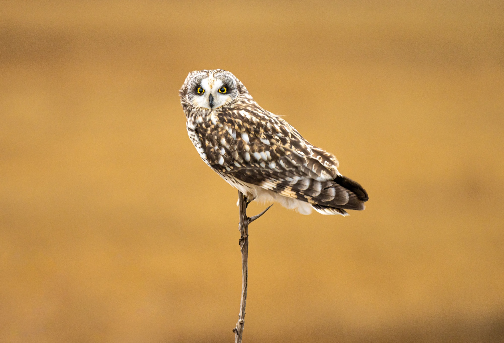
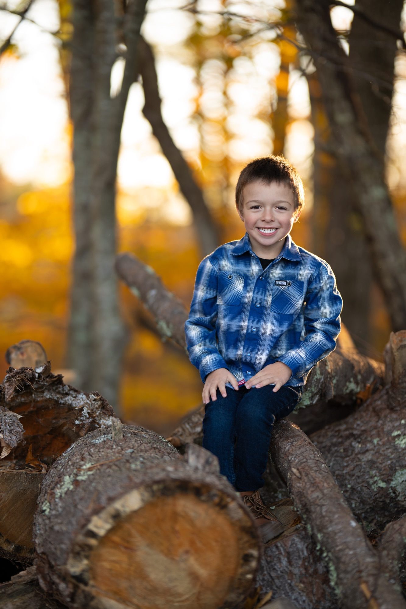
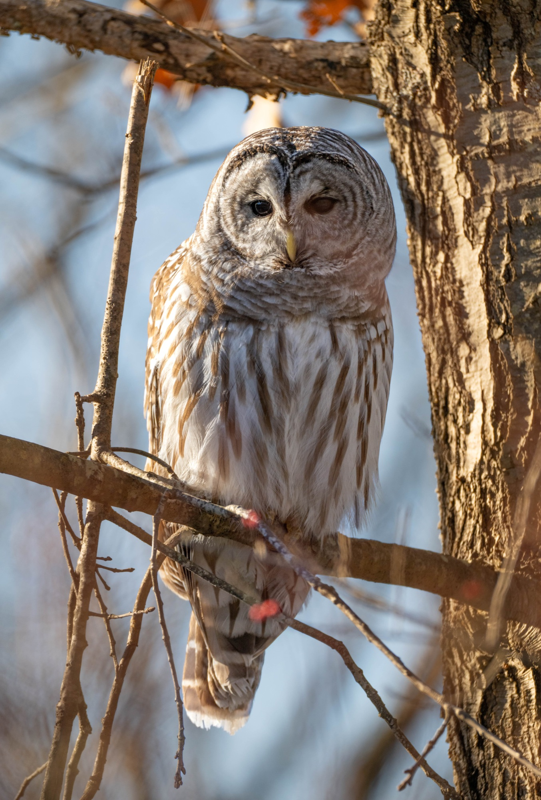
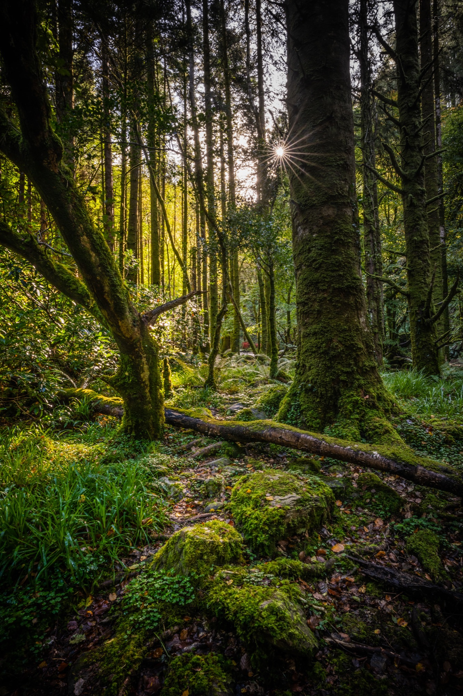

Seacoast, New Hampshire
Wildlife.
Wildlife.
Portraiture.
Landscape.
Audubon-featured wildlife and natural-light portrait photographer capturing real people, wild creatures, and breathtaking scenery.
Featured Work
A glimpse into some recent work captured on location.



Sessions & Prints
From heirloom-level family portrait sessions to stunning fine-art wildlife and landscape prints, I create imagery with depth, detail, and an eye for the extraordinary.